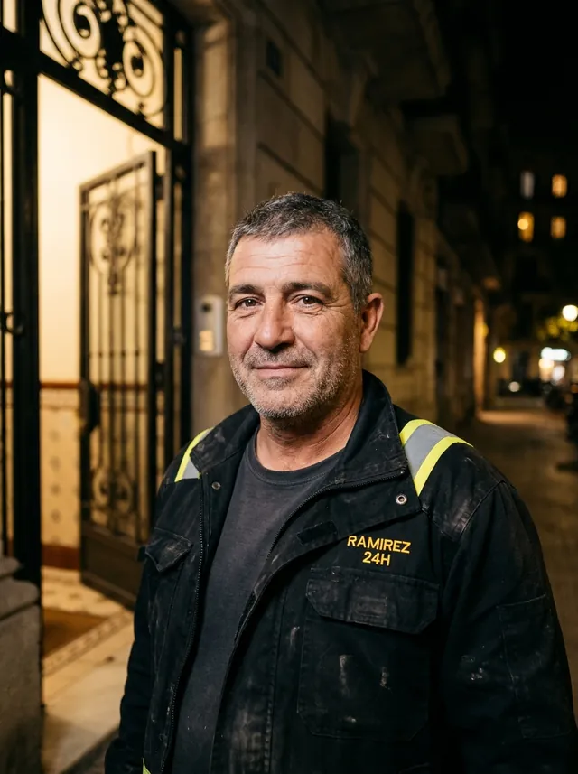

Cliente en la web
Centralita quien coge el teléfono y reparte
Técnico Omar, en la calle
Al terminar, los papeles salen solos.
Presupuesto firmado con el dedo, parte de trabajo y garantía, con los datos que ya estaban escritos. El IVA del 10 o del 21 % lo calcula la app.
